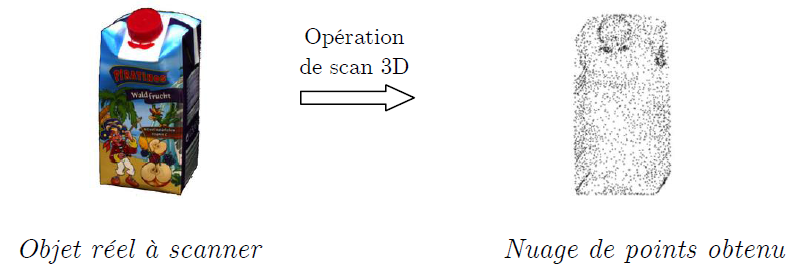
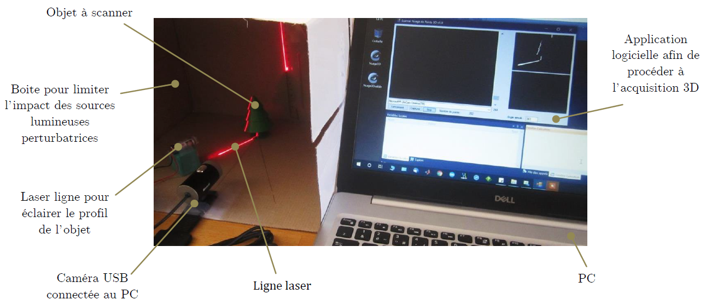
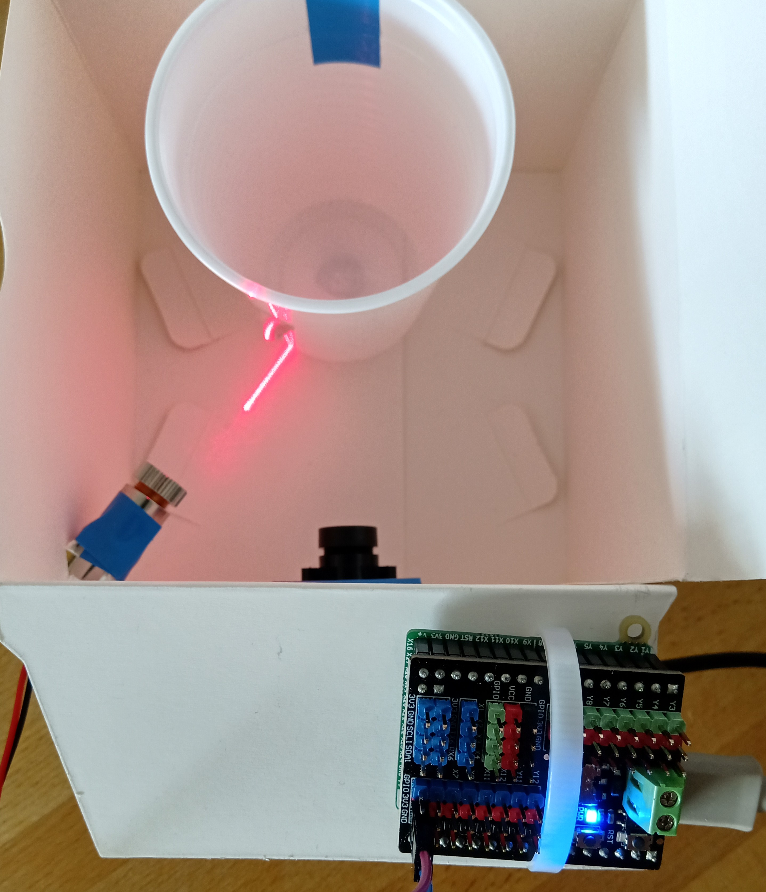
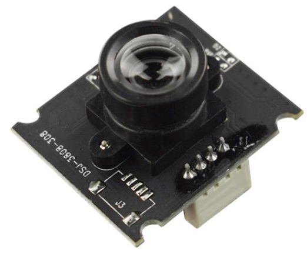
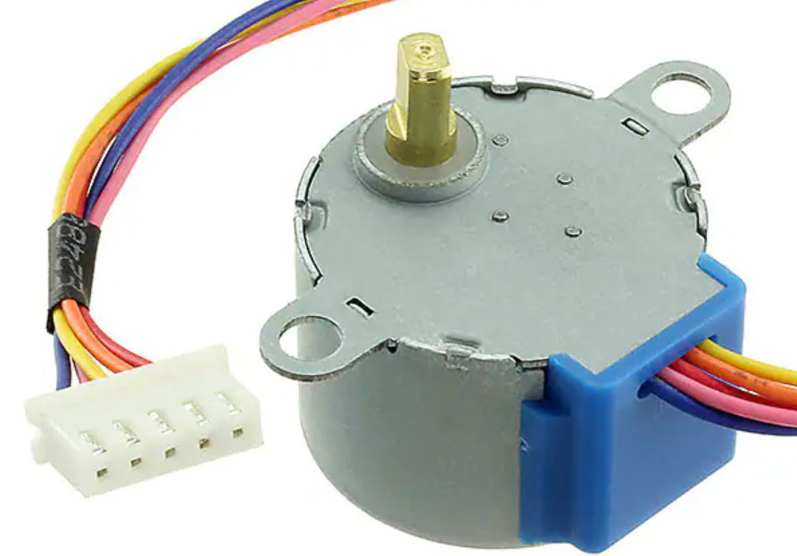

Objectifs
Objectif
L'objectif de ce projet est d'implémenter un code python permettant d'obtenir un modèle 3D d'un objet.
Ce projet mobilise :
- les notions de base en Python ;
- une interaction avec des périphériques d'entrée / sortie (entrée : caméra USB, sortie : motorisation électrique).
Ce scanner 3D artisanal sera en mesure de numériser de petits objets en générant un fichier 3D compatible avec les logiciels de modélisation 3d.
Notion de scanner 3D
Un scanner 3D permet d’obtenir le modèle 3D d’un objet sous la forme d’un nuage de points.

Un nuage de points 3D est un ensemble de points dans un système de coordonnées qui servent à représenter le profil extérieur d'un objet.
Le scanner se compose des éléments suivants :

Vous disposez de ces différents éléments matériels.
On vous propose de participer à l’élaboration logicielle de ce scanner 3D dont vous disposez :

Limitation
Le scanner ci-dessus permet uniquement de scanner des objets à révolution cylindrique car il est dépourvu de motorisation pour entraîner en rotation l’objet.
La motorisation (actionneur) sera mise en place dans un second temps.
Définition
Ce scanner est doté d'un capteur qui est une caméra USB.

Capteur
Un capteur est un système technique permettant de prélever une information (périphérique d'entrée).
Ici la caméra USB restitue une image sous forme numérique.
Le module python OpenCV va nous permettre de manipuler cette image numérique issue de la caméra.
La rotation de l'objet sera mise en place dans un second temps à l'aide un moteur électrique.

Actionneur
Ce moteur électrique est un actionneur, il permettra d'interagir avec l'objet à scanner (faire tourner l'objet sur lui-même) (périphérique de sortie).
Les données numériques issues du scanner (modèle numérique 3D) seront enregistrés sous la forme d'un nuage de point dans un fichier ply (Polygon File Format) :
Module OpenCV dans Thonny
Vous allez travailler sur Thonny et utiliser le module OpenCV afin de pouvoir manipuler les images issues de la caméra USB.
Voici pour information la commande permettant d'installer OpenCv :
pip install opencv-python --user
Phase de traitement logiciel
L’acquisition 3D d’un objet nécessite plusieurs phases de traitement logiciel :
- Acquisition de l'image ;
- Seuillage de l'image ;
- Désépaississement de la ligne de pixels ;
- Calculer les coordonnées 3D ;
- Générer le fichier de données 3D.
Dans un second temps :
- Mettre en place la rotation de l'objet.